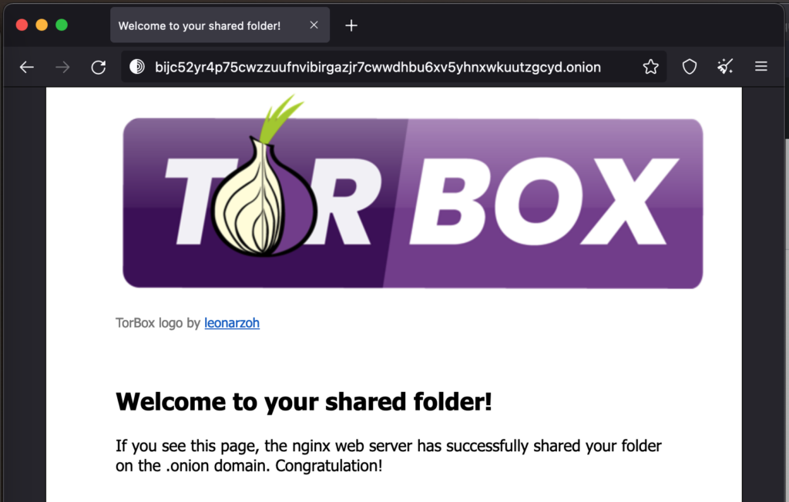
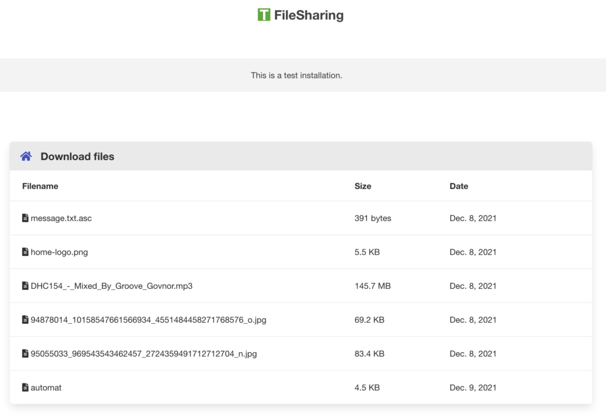
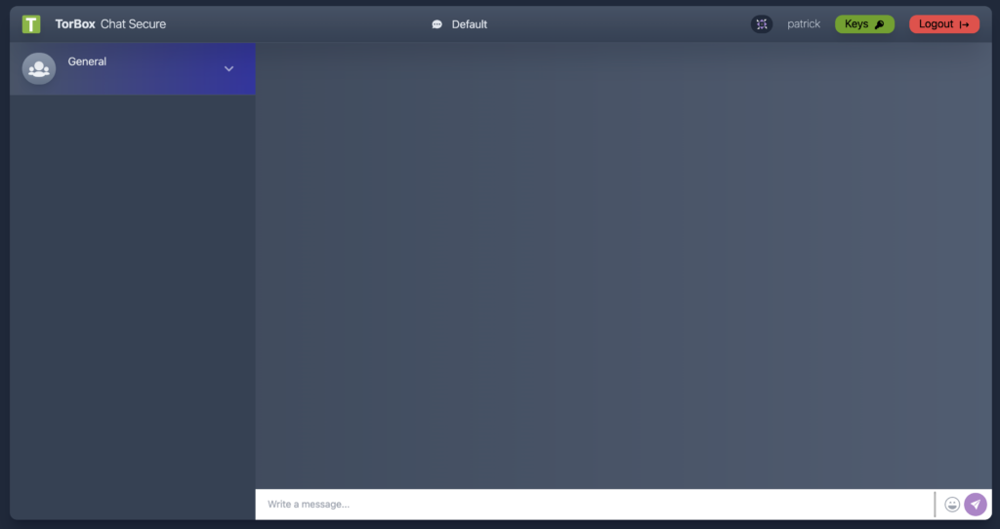

With the Onion Services sub-menu, it is easy and secure to share data through Tor and chat securely by accessing an .onion domain, even if TorBox is located behind firewalls, network address translators, or placed in a censoring country while preserving the security and anonymity of both parties.
Create and use your own Onion Service
To create and use your own Onion Service, you have to follow a top-down process as it is given by the sub-menu:
- Toggle the Onion Service Mode from OFF to ON or create an Onion Service (menu entry 2 or 3). It will give you a public Onion Service – everyone can access it.
- To limit access to your Onion Service, you can control the client’s access by generating a key pair (menu entry 7). The service side is configured with a public key, and the client can only access it with a private key. After generating the key pair, you can send the client his private key. Alternatively, you can register a client’s public key (menu entry 8) if he provides it. Client authorization makes an Onion Service private and authenticated.
- To use your Onion Service for something useful, you have to choose what you want to do with it: sharing files, folders, a static website (menu entry 17), starting TorBox File Sharing for uploading or/and downloading (menu entry 18), or starting a TorBox Chat Secure (menu entry 19). A single Onion Service can only provide one of these functionalities.
Important
The newly created Onion Service may not be accessible right away because time is needed to spread the information through the tor network.
Manage access to an Onion Service
If you have an Onion Service with client authorization (it doesn’t matter if it is your own Onion Service or from someone else), then you can register it with menu entry 13 and make it available to TorBox clients. In other words, if you register the private key from your own Onion Service or someone else, then not only will the TorBox itself have access to the Onion Service but also all client devices for which data traffic is routed through the TorBox. However, after the initial start, it can take up to 30′ minutes to take effect.


In the following, we look at all menu entries one by one:
- Menu entry 1: Run an Onion Service – Read Me First: This brief introduction is intended to help new users, in particular, to understand and simplify the set-up and use of an Onion Service within TorBox. It is a summary of what has been written above.
- Menu entry 2: Toggle Onion Service Mode: This entry switches the Onion Service on or off. Deactivating the Onion Service Mode will disable all Onion Services and automatically restarts Tor. The current configuration will be saved and reused with the next activation.
- Menu entry 3: Create or reactivate an Onion Service: This entry creates or reactivates an Onion Service. To do so, you must type in the service’s name. If the service is not existing, it will be created (including a shared folder). If the service exists, it may be deactivated. You can try to reactivate it.
Along with the Onion Service, a virtual port has to be defined. However, don’t worry about it, and just type in a number you wish to use (good numbers are 80, 8080, or something above 10000). When the Onion Service is successfully created, TorBox will present you with all the necessary information, including a QR code.
- Menu entry 4: List all Onion Services: Does what it says.
- Menu entry 5: Delete or deactivate an Onion Service: This entry deletes or deactivates one or several specific Onion Services. Use entry 2 for deactivating all Onion Services at once.
Deactivating means that the Onion Service, client authorizations, and hosted data will not be deleted and the actual configuration preserved. The same configuration will be applied if you activate the Onion Service Mode again.
Deleting means that the Onion Service, client authorizations, and the hosted data in the shared folder will be irrevocably lost.
- Menu entry 6: Enter the advanced configuration editor: This menu entry loads the Tor configuration file into a textual editor. You should know what you are doing before changing anything in the configuration file — here, you can break your TorBox. If you are unsure, then contact us. Did you something wrong? You can always overwrite this configuration with the default one, stored in ~/torbox/etc/tor/. After changing the configuration, use the following commands in the editor: CTRL-S and CTRL-X to exit the editor.

- Menu entry 7: Generate a new key pair (public and private key) for a client: An Onion Service could be used to serve a website folder (menu entry 17 or 18). The served data will be publicly available without activated client authorization (menu entry 7-11). This behavior may not be what you wanted. With a key pair (public and private key), access to an Onion Service can be limited to those with the private key. This menu entry will generate a key pair (public and private key) where the public key is automatically stored in the specific Onion Service. The private key should be sent to the client, which gives him access to the particular Onion Service. If the client already has a key pair and gives out a public key, you can register it to a specific Onion Service using menu entry 8.
- Menu entry 8: Register a client with its public key: If the client sends a public key to the Onion Service operator, this menu entry will register this public key for a particular Onion Service. The Onion Service operator doesn’t have to send anything to the client- the client already has the private key. Alternatively, the Onion Service operator can generate a new key pair (public and private key) with menu entry 7.
- Menu entry 9: Edit a client’s authorization: With this entry, you can directly edit a client’s authorization by starting an editor. After changing the authorization, use the following commands in the editor: CTRL-S and CTRL-X to exit the editor.
- Menu entry 10: List all clients for a particular Onion Service: Does what it says.
- Menu entry 11: Remove a client’s authorization: This entry removes one or several client authorization(s) from a particular Onion Service? Removing all client authorization(s) from a specific Onion Service makes the service public.
- Menu entry 12: Generate a new key pair (public and private key) for a server: This menu entry will generate a key pair (public and private key) where the private key is automatically stored to authorize your TorBox as a legit client. The public key should be sent to the Onion Service operator to give you access to the particular Onion Service (server). If the Onion Service operator already has a key pair and gives you a private key, you can register it using menu entry 13. If you register the private key from your own Onion Service or someone else, then not only will the TorBox itself have access to the Onion Service but also all client devices for which data traffic is routed through the TorBox. However, after the initial start, it can take up to 30′ minutes to take effect.
- Menu entry 13: Register a server with its public key: If the Onion Service operator sends a private key, this menu entry will register this private key for a particular Onion Service. With it, TorBox is authorized as a legit client. Alternatively, you can generate a new key pair (public and private key) with menu entry 12. However, this will not only give the TorBox itself access but also all client devices, which data traffic is routed through the TorBox. It also works if your TorBox has an Onion Service with client authorization running, and you will give free access to the client devices whose data traffic is routed through the TorBox (in this case, TorBox is the server and client). However, after the initial start, it can take up to 30′ minutes to take effect.
- Menu entry 14: Edit a server access authorization: With this entry, you can directly edit a server access authorization by starting an editor. After changing the authorization, use the following commands in the editor: CTRL-S and CTRL-X to exit the editor.

- Menu entry 15: List all all server access authorizations: Does what it says.
- Menu entry 16: Remove a server access authorization: This entry removes one or several server access authorization(s)?
- Menu entry 17: Start/stop sharing a folder on an Onion domain and list them: This entry starts, stops or lists website folders on Onion domains. After starting, it may take minutes until it is accessible through tor. Sharing a folder (menu entry 17) is a quick and good solution for statically sharing documents and websites. The difference to TorBox’s File Sharing (TFS) capabilities (menu entry 18) is that TFS is focused on exchanging files, not serving a website.
- Menu entry 18: Start/stop upload or/and download files (TorBox File Sharing): This menu entry starts, stops or lists TorBox File Sharing (TFS) capabilities on Onion domains. After starting, it may take minutes until it is accessible through tor. The difference between serving a website folder on Onion domains (menu entry 17) is that TFS is focused on exchanging files, not serving a website.


- Menu entry 19: Start/stop TorBox Chat Secure: TCS is a secure way to communicate between two people using a specific onion domain. It can be used as a chatroom with an open space and private channels between individuals (similar to the old and mighty IRC). Downloading a key makes it possible to leave the chat room and log in later to see the “open” conversations and their messages in the private channels. All conversations are encrypted on the TorBox but cannot be decrypted without the key. After starting TCS, it may take minutes until it is accessible through tor. Turning TCS off will delete all encrypted data.
• • •
Problems and questions
- I set up an Onion Service and want to share a folder with or without client authorization, but the TorBrowser on another system shows only errors that it cannot connect to the Onion Service. What is wrong here? –> see here.
- I’m connected to TorBox, and all is working as expected, but Firefox, Safari and any iOS device don’t display .onion sites. What’s wrong? –> see here.